DOCUMENTALES DE TEATRO
THEATRE DOCUMENTARIES
THEATRE DOCUMENTARIES
| Agatha Christie: 100 Years of Suspense
Year:2020 Language: EN Format: mp4 Resolution: SD
|
| The Andrew Lloyd Webber Story
Year:1986 Language: EN Format: mp4 Resolution: 480p
|
| Andrew Lloyd Webber: Tribute to a Superstar
Year:2018 Language: EN Format: mp4 Resolution: 480p
|

| The Art of Imagination
Year:2005 Language: EN Format: mp4 Resolution: 576p
|
| Barbra: The Music ... The Mem'ries ... The Magic!
Year:2017 Language: EN Format: mp4 Resolution: 1080p
|

| Because of the Wonderful Things It Does
Year:2005 Language: EN Format: mp4 Resolution: 576p
|
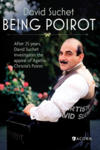 | Being Poirot
Year:2013 Language: EN Format: mp4 Resolution: SD
|
| Betty White: First Lady of Television
Year:2018 Language: EN Format: mp4 Resolution: 1080p
|
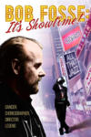 | Bob Fosse: It's Showtime!
Year:2019 Language: EN Format: mp4 Resolution: 1080p
|
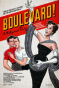 | Boulevard! A Hollywood Story
Year:2021 Language: EN Format: mp4 Resolution: 1080p
|
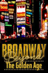 | Broadway: Beyond the Golden Age
Year:2021 Language: EN Format: mp4 Resolution: 1080p
|
| Broadway: The Golden Age
Year:2003 Language: EN Format: mp4 Resolution: 1080p
|
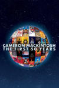 | Cameron Mackintosh - The First 50 Years
Year:2021 Language: EN Format: mp4 Resolution: 720p
|
| Carol Channing: Larger Than Life
Year:2012 Language: EN Format: mp4 Resolution: SD
|
| Castrato in Search of a Lost Voice
Year:2006 Language: EN Format: mp4 Resolution: 480p
|
| The Day the Music Died
Year:2022 Language: EN Format: mp4 Resolution: 1080p
|
| Definitely Dusty
Year:1999 Language: EN Format: mp4 Resolution: 1080p
|
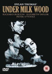 | Dylan on Dylan
Year:2002 Language: EN Format: mp4 Resolution: SD
|
| Edith Piaf Bonus
Year:2004 Language: EN Format: mp4 Resolution: 576p
|
| Edith Piaf: A Passionate Life
Year:2004 Language: EN Format: mp4 Resolution: 576p
|
| édith Piaf: Sans Amour, on N'est Rien Du Tout
Year:2010 Language: EN Format: mp4 Resolution: 480p
|
| Elaine Stritch: Shoot Me
Year:2013 Language: EN Format: mp4 Resolution: SD
|
| Every Little Step
Year:2009 Language: EN Format: mp4 Resolution: 480p
|
| Evita Pre Madonna
Year:1996 Language: EN Format: mp4 Resolution: 720p
|
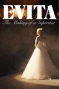 | Evita: The Making of a Superstar
Year:2018 Language: EN Format: mp4 Resolution: 1080p
|
| Faces of Elaine Paige
Year:1996 Language: EN Format: mp4 Resolution: 576p
|
| Fiddler: A Miracle of Miracles
Year:2019 Language: EN Format: mp4 Resolution: 1080p
|
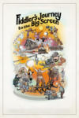 | Fiddler's Journey to the Big Screen
Year:2022 Language: EN Format: mp4 Resolution: 1080p
|
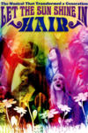 | Hair, Let the Sunshine In
Year:2007 Language: EN Format: mp4 Resolution: 480p
|
| Harry Potter 20th Anniversary: Return to Hogwarts
Year:2022 Language: EN Format: mp4 Resolution: 1080p
|
| The Heat Is Back On: The Remaking of Miss Saigon
Year:2015 Language: EN Format: mp4 Resolution: 1080p
|
| The Heat Is On: The Making Of Miss Saigon (1989)
Year:1989 Language: EN Format: mp4 Resolution: 576p
|
| Hello, Dolly! Around the World
Year:1966 Language: EN Format: mp4 Resolution: 480p
|
| Howard
Year:2018 Language: EN Format: mp4 Resolution: 1080p
|
| Imagine Andrew Lloyd Webber: Memories
Year:2018 Language: EN Format: mp4 Resolution: 720p
|
| Imagine Cameron Mackintosh: The Musical Man
Year:2017 Language: EN Format: mp4 Resolution: 480p
|
| Jesucristo Superstar: Un Hito en La Historia Del Musical Español
Year:2015 Language: ES Format: mp4 Resolution: 576p
|
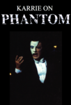 | Karrie on Phantom
Year:1998 Language: EN Format: mp4 Resolution: SD
|

| L. Frank Baum - The Man Behind The Curtain
Year:2005 Language: EN Format: mp4 Resolution: 576p
|
| Les Miserables Goes to China
Year:2002 Language: EN Format: mp4 Resolution: 576p
|
| Let's Have Lunch: Backstage at Sunset Boulevard
Year:2017 Language: EN Format: mp4 Resolution: 1080p
|
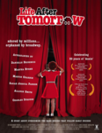 | Life After Tomorrow
Year:2006 Language: EN Format: mp4 Resolution: SD
|
| The Life And Loves Of Oscar Wilde
Year:1988 Language: EN Format: mp4 Resolution: 576p
|

| The Making of La Môme
Year:2007 Language: FR Format: mp4 Resolution: 576p
|
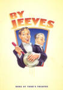 | The Making of by Jeeves
Year:2001 Language: EN Format: mp4 Resolution: 576p
|

| The Making of Cats
Year:1998 Language: EN Format: mp4 Resolution: 480p
|
| The Making of Chess
Year:1984 Language: EN Format: mp4 Resolution: 576p
|
| Making Of Dans der Vampieren (2010)
Year:2010 Language: NL Format: mp4 Resolution: 480p
|
| Making of Elisabeth Nl
Year:1999 Language: NL Format: mp4 Resolution: SD
|
| Making of Elisabeth Wien
Year:1992 Language: EN Format: mp4 Resolution: 576p
|

| The Making of Jesus Christ Superstar
Year:2000 Language: EN Format: mp4 Resolution: 576p
|
| The Making of Jesus Christ Superstar Arena Tour
Year:2012 Language: EN Format: mp4 Resolution: 1080p
|
| The Making of Joseph and the Amazing Technicolor Dreamcoat
Year:1999 Language: EN Format: mp4 Resolution: 576p
|
| The Making of Love Never Dies
Year:2012 Language: EN Format: mp4 Resolution: 1080p
|
| The Making of Martin Guerre: A Musical Journey
Year:2000 Language: EN Format: mp4 Resolution: 576p
|
| The Making of Miss Saigon Manila
Year:2000 Language: EN Format: mp4 Resolution: SD
|
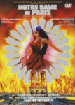 | Making of Notre Dame De Paris
Year:1998 Language: FR Format: mp4 Resolution: 480p
|
| Making of Sunset Boulevard
Year:2009 Language: NL Format: mp4 Resolution: 576p
|
| The Making of Tanz Der Vampire
Year:1997 Language: DE Format: mp4 Resolution: SD
|
| Making of the Sound Od Music Live
Year:2015 Language: EN Format: mp4 Resolution: SD
|
| Making of the Wiz Nl
Year:2006 Language: EN Format: mp4 Resolution: 480p
|
| Maria by Callas
Year:2017 Language: EN Format: mp4 Resolution: 1080p
|
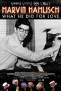 | Marvin Hamlisch: What He Did For Love
Year:2013 Language: EN Format: mp4 Resolution: 1080p
|

| Masterpiece Behind the Scenes
Year:2001 Language: EN Format: mp4 Resolution: 576p
|
| Matt Lucas Dreams the Dream
Year:2010 Language: EN Format: mp4 Resolution: 576p
|
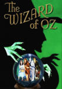 | Memories Of Oz
Year:2001 Language: EN Format: mp4 Resolution: 576p
|
| Meredith Wilson: America's Music Man
Year:2023 Language: EN Format: mp4 Resolution: 720p
|
| Making of Beauty and the Beast Nl
Year:2005 Language: EN Format: mp4 Resolution: 576p
|

| La Môme en New York
Year:2007 Language: FR Format: mp4 Resolution: 576p
|
| Mr Prince
Year:2009 Language: EN Format: mp4 Resolution: 480p
|
| The Music of Kander and Ebb: Razzle Dazzle
Year:1997 Language: EN Format: mp4 Resolution: 480p
|
| Musikalen Kom Hem
Year:2003 Language: EN Format: mp4 Resolution: SD
|
| Nothing Like a Dame
Year:2018 Language: EN Format: mp4 Resolution: 720p
|
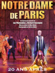 | Notre Dame De Paris: 20 Ans Après
Year:2017 Language: EN Format: mp4 Resolution: 720p
|
| Omnibus: Sunset Boulevard
Year:1993 Language: EN Format: mp4 Resolution: 576p
|
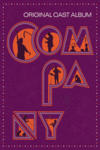 | Original Cast Album: Company
Year:1970 Language: EN Format: mp4 Resolution: 1080p
|
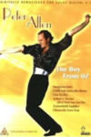 | Peter Allen the Boy From Oz
Year:2005 Language: EN Format: mp4 Resolution: SD
|
| Peter Cushing: In His Own Words
Year:2020 Language: EN Format: mp4 Resolution: 1080p
|
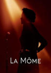 | Piaf: Cet Obscur Sujet De Désir
Year:2007 Language: EN Format: mp4 Resolution: 576p
|
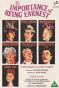 | A Profile of The Importance of Being Earnest
Year:1999 Language: EN Format: mp4 Resolution: 576p
|
| Recording the Producers: A Musical Romp with Mel Brooks
Year:2001 Language: EN Format: mp4 Resolution: 480p
|
| Revolution Rent
Year:2019 Language: EN Format: mp4 Resolution: 720p
|
| Rita Moreno: Just a Girl Who Decided to Go for It
Year:2021 Language: EN Format: mp4 Resolution: 1080p
|
| Rumbo Al Estreno: Evita
Year:1997 Language: EN Format: mp4 Resolution: 720p
|
| Singin' in the Rain: Raining on a New Generation
Year:2012 Language: EN Format: mp4 Resolution: 1080p
|
| Six by Sondheim
Year:2013 Language: EN Format: mp4 Resolution: 720p
|
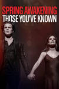 | Spring Awakening:those You've Known
Year:2022 Language: EN Format: mp4 Resolution: 720p
|
| Stage By Stage: Les Misérables
Year:1988 Language: EN Format: mp4 Resolution: 576p
|
| Starmania 25 Ans Déjà Sur France
Year:2004 Language: EN Format: mp4 Resolution: 576p
|
| The Story of Musicals
Year:2012 Language: EN Format: mp4 Resolution: 576p
|
| Sunset Blvd From Movie to Musical
Year:1995 Language: EN Format: mp4 Resolution: 480p
|
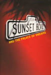 | Sunset Boulevard and the Palace of Dreams
Year:1997 Language: EN Format: mp4 Resolution: 480p
|
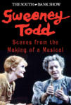 | Sweeney Todd: Scenes from the Making of a Musical
Year:1980 Language: EN Format: mp4 Resolution: 1080p
|
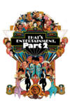 | That's Entertainment, Part II
Year:1976 Language: EN Format: mp4 Resolution: 1080p
|
| That's Entertainment!
Year:1974 Language: EN Format: mp4 Resolution: 1080p
|
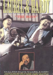 | A Tribute to the Boys: Laurel and Hardy
Year:1992 Language: EN Format: mp4 Resolution: 576p
|
| Ujarmić Koty
Year:2003 Language: PL Format: mp4 Resolution: 576p
|
| We Love Elisabeth
Year:2001 Language: EN Format: mp4 Resolution: 480p
|
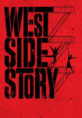 | West Side Story: Pow! The Dances of West Side Story
Year:2011 Language: EN Format: mp4 Resolution: 720p
|

| The Wonderful Wizard Of Oz - The Making Of A Movie Classic
Year:1990 Language: EN Format: mp4 Resolution: 576p
|